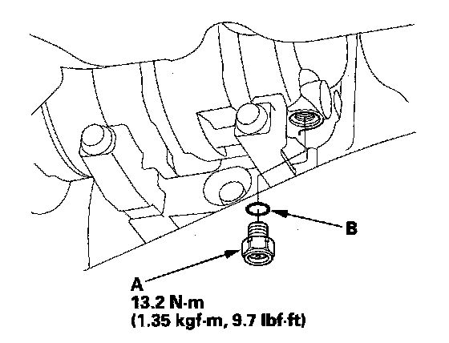

High Pressure Safety Valve HVAC: Service and Repair
A/C Compressor Relief Valve Replacement1. Recover the refrigerant with a recovery/recycling/ charging station.
2. Remove the front splash shield.
3. Remove the front undercover.

4. Remove the relief valve (A) and the O-ring (B). Plug the opening to keep foreign matter from entering the system and the A/C compressor oil from running out.
5. Clean the mating surfaces.
6. Replace the O-ring with a new one at the relief valve, and apply a thin coat of refrigerant oil before installing it.
7. Remove the plug, and install and tighten the relief valve.
8. Charge the system.